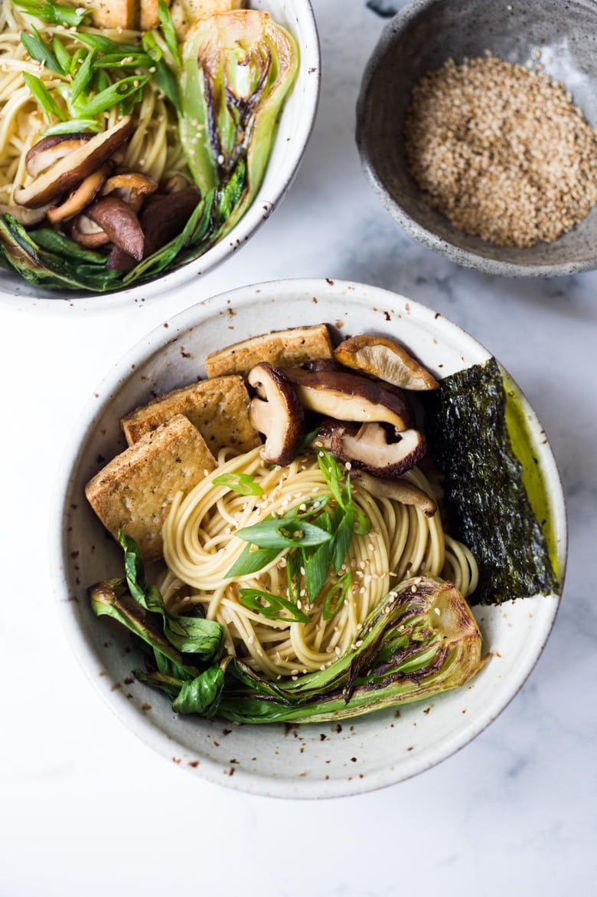

Miso Shiitake Ramen

Description:
Healthy ramen in a flavorful broth with mushrooms, tofu, bok choy, sesame seeds, and green onions.
This recipe is an excellent meal prep option where the only prep needed is to cook the noodles.
Ingredients:
Ramen Broth:
- 1 large onion-diced
- 2 smashed garlic cloves
- 1–2 tablespoon olive oil
- 4 cups veggie stock
- 4 cups water
- 1/2 cup dried Shiitake Mushrooms, broken into small pieces (see notes )
- 1 sheet Kombu seaweed (available at Asian markets) –optional, but good!
- 1/8 cup mirin ( Japanese cooking wine)
- 1–2 tablespoons white miso paste
- pepper to taste
- for spicy, add sriracha to taste, hot chili oil, or red pepper flakes
Ramen:
- 6– 8 ounces dried Ramen Noodles
- 8 ounces Cubed Crispy Tofu
- Optional veggies: Steamed or sauteed bok choy, fresh spinach, shredded carrots or cabbage, roasted winter squash, roasted cauliflower, roasted carrots, roasted sweet potato, sauteed mushrooms, smoked mushrooms, baby corn, Bamboo shoots, Enoki mushrooms, Kimchi, Soft boiled eggs (obviously not vegan) daikon radish, pickled radish, fresh herbs.
- Garnishes: scallions, Furikake or toasted sesame seeds, sriracha and sesame oil
Steps:
- If adding roasted veggies, do this first. Toss bite-sized pieces, with a little olive oil, salt and pepper and place on a parchment-lined sheet pan and roast in a 400F oven until fork tender.
- Make the BROTH: Over medium-high heat, saute the onion in 1 tablespoon oil until tender about 3 minutes. Turn heat to medium, add the smashed garlic cloves and continue cooking the onions until they are deeply golden brown. Add the veggie stock, water, dried shiitakes, a sheet of kombu (rinsed) and mirin. Bring to a Simmer.
- Simmer for 25-30 minutes uncovered on med heat, then remove the Kombu. Add the miso, and pepper to taste. Adjust salt to your liking (feel free to add salt, soy or more miso). Keep warm. FYI: If this reduces too much it may become salty…. simply add a little water to taste.
- While the broth is simmering, cook the ramen noodles in a pot of boiling water, according to directions. Drain. Toss with sesame oil to keep separated.
- Prep other veggies and other toppings. Feel free to steam bok choy or fresh spinach, or saute them until just tender. If using mushrooms, saute in a little oil until tender (or smoke! see post) seasoning with salt and pepper. Use a combo of fresh and cooked veggies for the best texture. 🙂 Make the crispy tofu!
- OPTIONAL: To make a Creamy broth: Blend the finished broth in a blender. The shiitake mushrooms will give the broth a rich creaminess. Or you could blend half the broth for semi-creamy.
- Fill bowls with cooked noodles, crispy tofu and any other veggies you want. Pour the flavorful Shiitake broth over top. Garnish with a little drizzle of sesame oil and sriracha. Top with scallions and sesame seeds.
- Serve immediately.